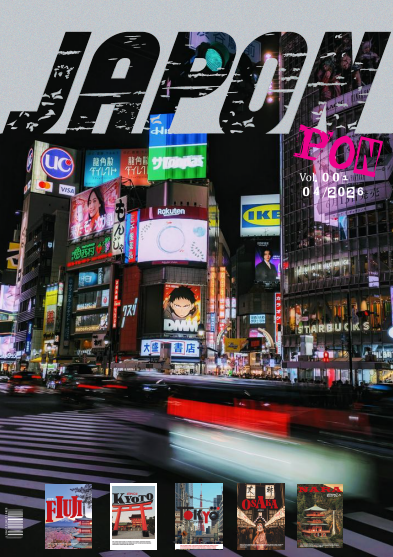
Revista de JAPON
Diseño editorial con temática urbana y metropolitana, enfocada en la cultura visual, tipografía experimental y la estética contemporánea de Japón.
Soy un diseñador y desarrollador con 3 años de experiencia. Mi enfoque combina la precisión del código, la estrategia del branding y la sensibilidad de la fotografía para crear proyectos digitales coherentes y funcionales.
Durante mis 3 años en la industria, he aprendido que el buen diseño no es solo estético, sino que debe resolver problemas reales. Mantengo una perspectiva fresca y una dedicación constante al aprendizaje, lo que me permite abordar cada proyecto con versatilidad. Trabajo en la intersección exacta entre lo visual y lo técnico.
Proyectos creativos independientes, experimentación editorial y cartelería conceptual.

Diseño editorial con temática urbana y metropolitana, enfocada en la cultura visual, tipografía experimental y la estética contemporánea de Japón.
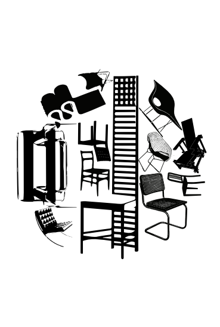
Publicación conceptual inspirada en la subcultura Mod, combinando el diseño retro con retículas limpias y una paleta de alto contraste.
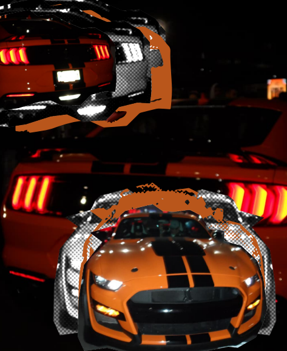
Edición fotográfica especializada en la cultura automotriz y reuniones de autos, destacando la edición de imagen y composición visual.
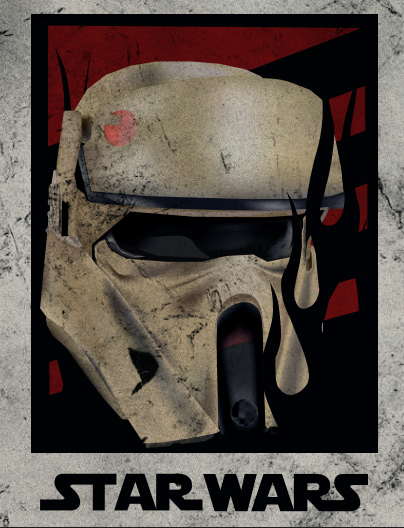
Cartel cinematográfico conceptual que explora la jerarquía visual, el uso del espacio negativo y la atmósfera de la saga espacial.
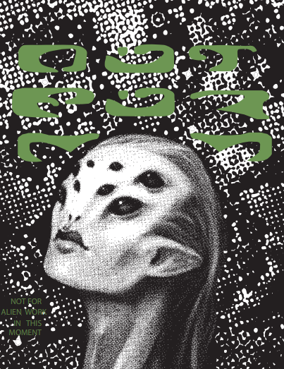
Pieza de diseño gráfico e ilustración inspirada en el terror clásico de ciencia ficción, enfocada en generar tensión visual y misterio.
Construcción de interfaces y experiencias digitales robustas.
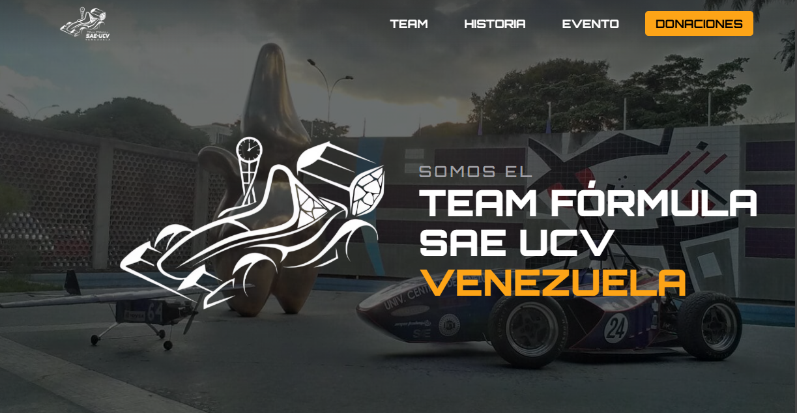
Plataforma web de alto rendimiento para el equipo de ingeniería automotriz de la Universidad Central de Venezuela. Desarrollo SPA interactivo y backend a medida para gestión de patrocinios y reclutamiento.

Rebranding digital y desarrollo frontend para tienda de repuestos automotrices. Diseño UI/UX centrado en optimizar la búsqueda del catálogo y mejorar la tasa de conversión en dispositivos móviles.
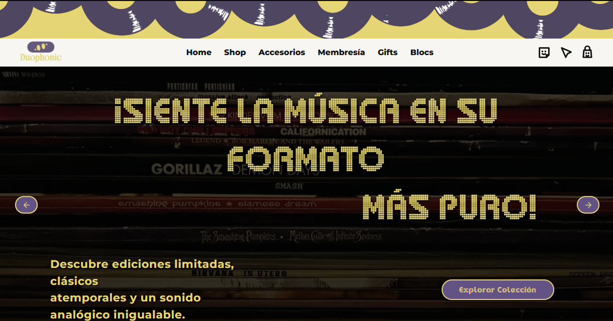
Proyecto freelance: Plataforma e-commerce especializada en la venta de discos de vinilo. Desarrollo frontend con enfoque minimalista, optimizado para la exploración de catálogos musicales y una experiencia de compra fluida para coleccionistas.
- NO HA SIDO COMPLETADO AUN ESTAMOS TRABAJANDO CON LA TIENDA PARA CUMPLIR LO REQUERIDO.
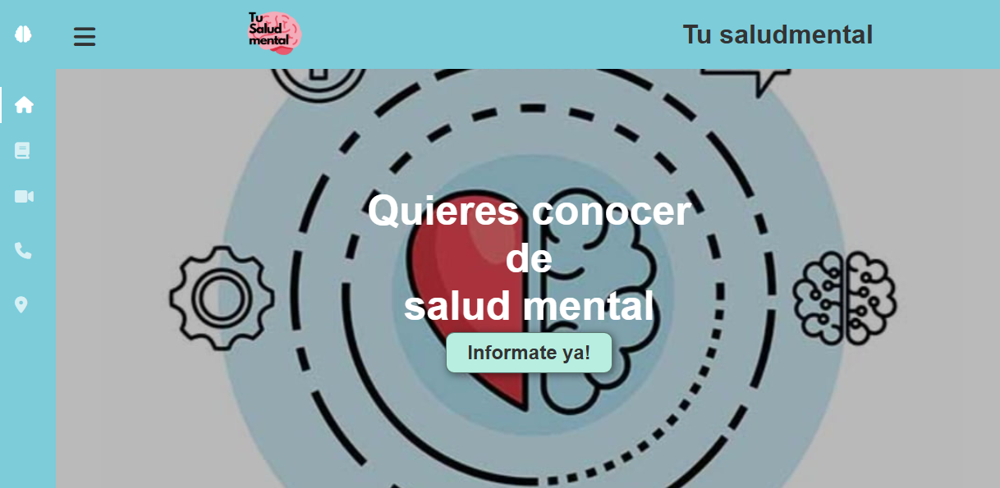
Proyecto fundacional: Tesis de bachillerato enfocada en la concientización sobre la salud mental. Diseño y desarrollo web completo realizado desde cero, marcando el inicio de mi carrera tecnológica.
Estrategia visual e identidades memorables.

Creación de la identidad visual completa para el equipo de competición automovilística de la UCV. Desarrollo de nuevo logotipo, paleta cromática técnica y una estética renovada de alta competición.
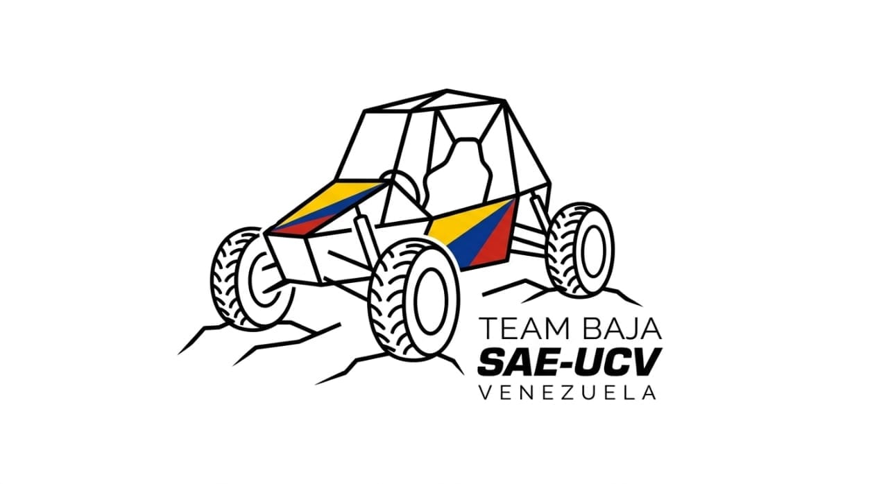
Desarrollo de branding y sistema de identidad visual para el equipo todoterreno Baja SAE UCV. Creación de logotipo robusto, paleta de colores de alto contraste inspirada en entornos off-road y manual de normas para la carrocería y la comunicación digital.
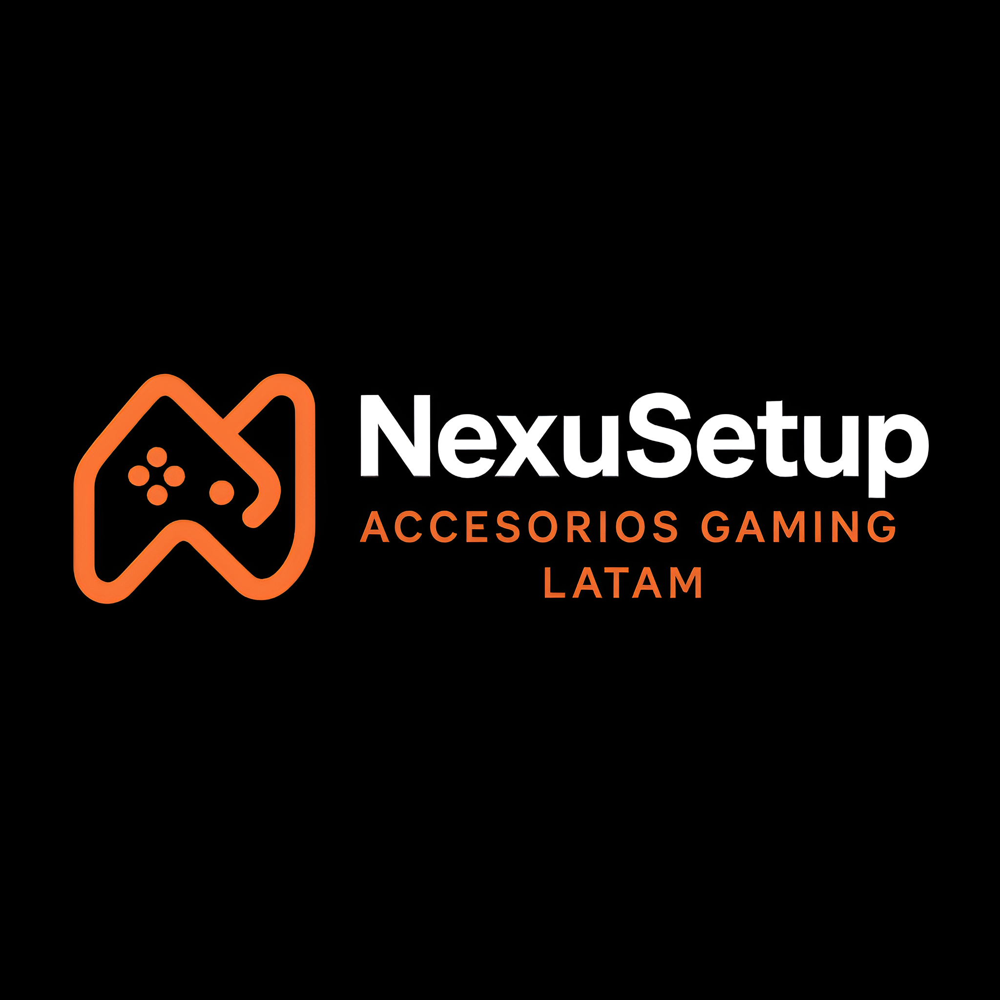
Creación de identidad visual y logotipo para tienda oficial en Mercado Libre especializada en accesorios gaming. Diseño optimizado para alta legibilidad en avatares de e-commerce y estética tecnológica.
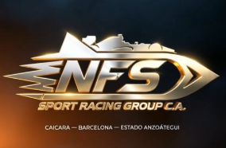
Identidad visual de alto rendimiento para equipo de competición automovilística. Conceptualización, paleta cromática técnica, manual de normas y aplicaciones en carrocería y merchandising.
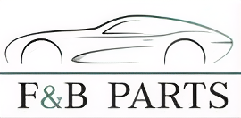
Rebranding integral para tienda de repuestos automotrices. Desarrollo de logotipo y variantes, paleta cromática técnica, tipografía corporativa, manual de normas y mockups de aplicación real.
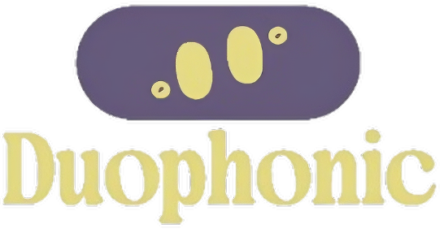
Diseño de marca e identidad visual para Duophonic, tienda especializada en discos de vinilo. Creación de logotipo con estética retro-moderna, paleta cromática analógica y adaptaciones para soportes físicos y digitales.
Capturando la luz, la forma y el contexto.
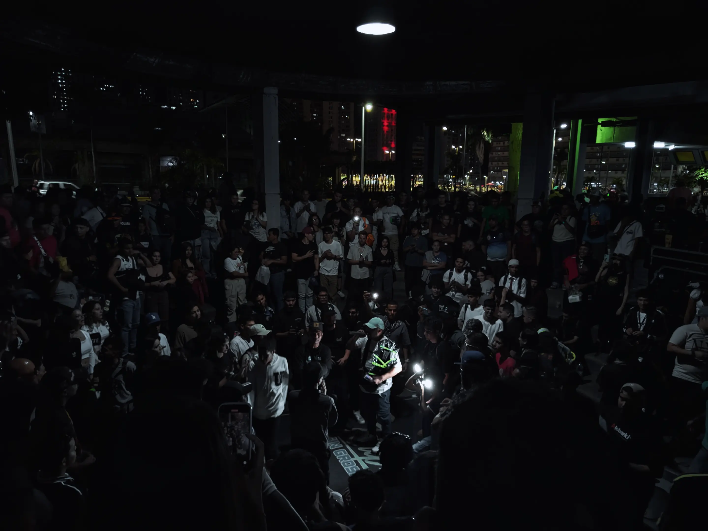
Captura de la energía, la tensión y la expresión escénica en una de las competencias de improvisación más exigentes. Un registro dinámico enfocado en la iluminación dramática y la reacción en vivo.
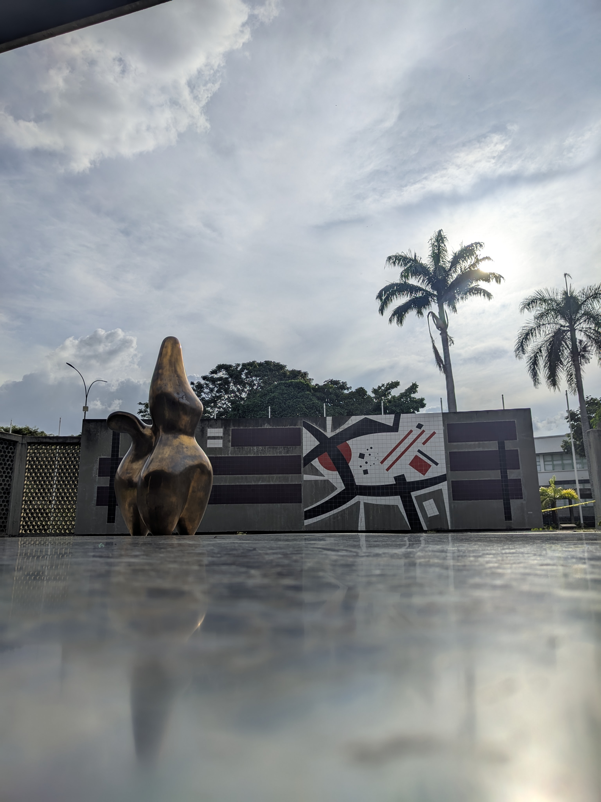
Ensayo fotográfico enfocado en la arquitectura moderna de la Universidad Central de Venezuela. A través de encuadres limpios y contrastes de luces y sombras, se retrata la monumentalidad de sus espacios icónicos.